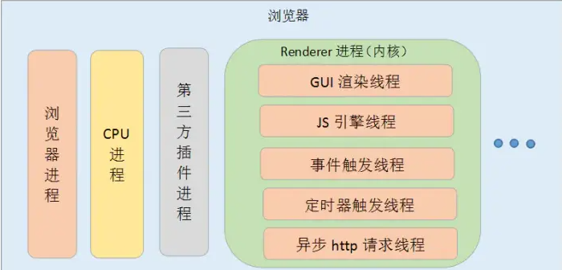
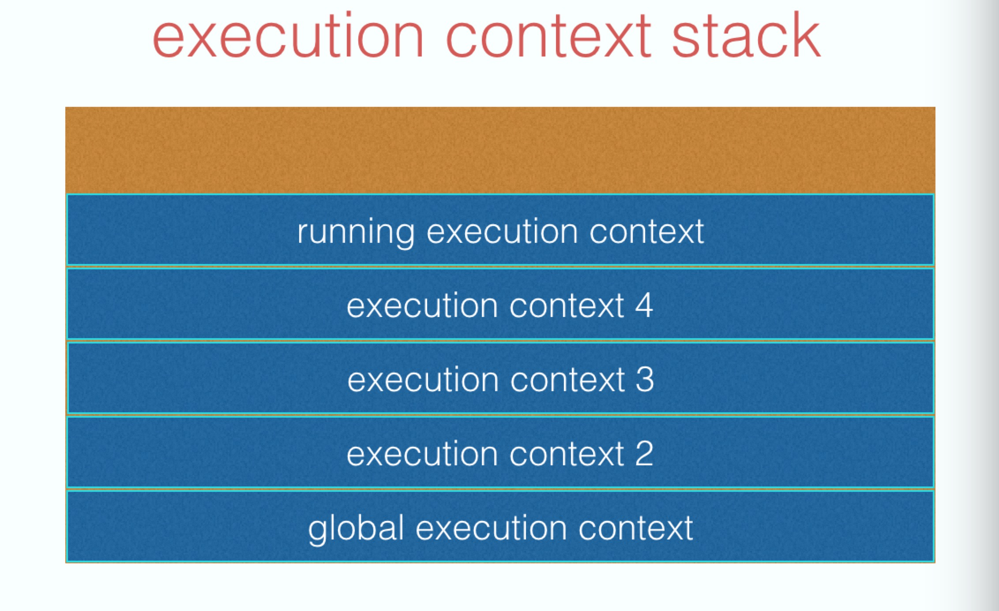
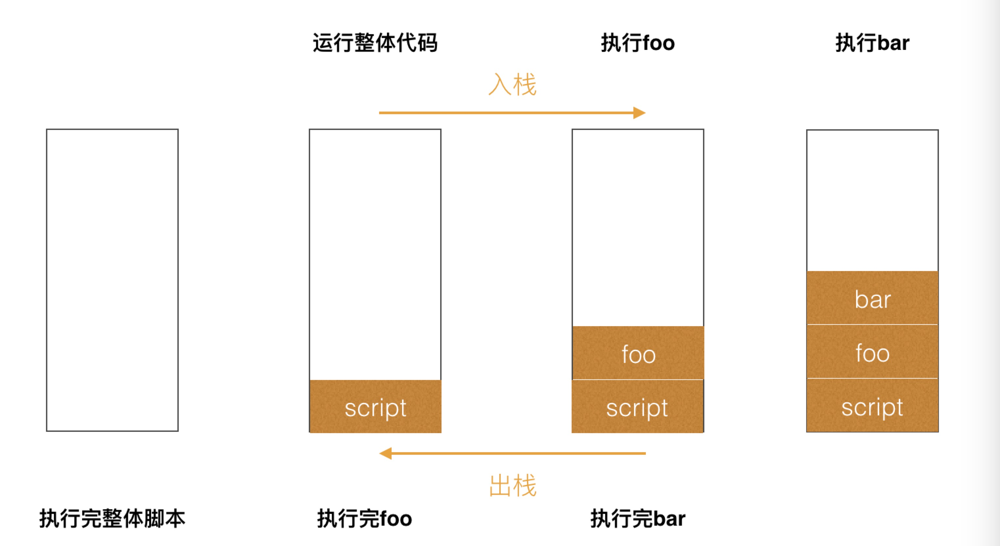
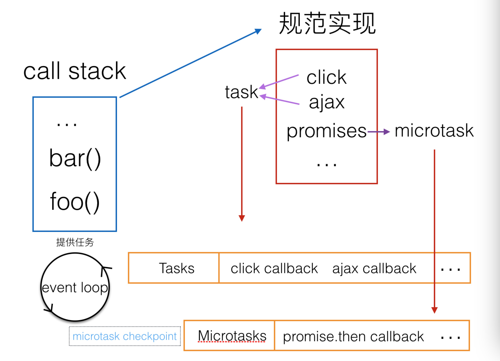

异步的思考
提起异步，相信每个人都知道。异步背后的“靠山”就是 event loops。这里的异步准确的说应该叫浏览器的 event loops 或者说是 javaScript 运行环境的 event loops，因为ECMAScript中没有 event loops，event loops 是在HTML Standard定义的。
（1）单线程的 JavaScript
我们知道，JavaScript 是一种单线程语言，它主要用来与用户互动，以及操作 DOM。
JavaScript 有同步和异步的概念，这就解决了代码阻塞的问题：
- 同步：如果在一个函数返回的时候，调用者就能够得到预期结果，那么这个函数就是同步的；
- 异步：如果在函数返回的时候，调用者还不能够得到预期结果，而是需要在将来通过一定的手段得到，那么这个函数就是异步的。那单线程有什么好处呢？
在 JS 运行的时候可能会阻止 UI 渲染，这说明了两个线程是互斥的。这是因为 JS 可以修改 DOM，如果在 JS 执行的时候 UI 线程还在工作，就可能导致不能安全的渲染 UI。
得益于 JS 是单线程运行的，可以达到节省内存，节约上下文切换时间的好处。（2）多线程的浏览器
JS 是单线程的，在同一个时间只能做一件事情，那为什么浏览器可以同时执行异步任务呢？
这是因为浏览器是多线程的，当 JS 需要执行异步任务时，浏览器会另外启动一个线程去执行该任务。也就是说，JavaScript 是单线程的指的是执行 JavaScript 代码的线程只有一个，是浏览器提供的 JavaScript 引擎线程（主线程）。除此之外，浏览器中还有定时器线程、 HTTP 请求线程等线程，这些线程主要不是来执行 JS 代码的。
比如主线程中需要发送数据请求，就会把这个任务交给异步 HTTP 请求线程去执行，等请求数据返回之后，再将 callback 里需要执行的 JS 回调交给 JS 引擎线程去执行。也就是说，浏览器才是真正执行发送请求这个任务的角色，而 JS 只是负责执行最后的回调处理。所以这里的异步不是 JS 自身实现的，而是浏览器为其提供的能力。

可以看到，Chrome 不仅拥有多个进程，还有多个线程。以渲染进程为例，就包含 GUI 渲染线程、JS 引擎线程、事件触发线程、定时器触发线程、异步 HTTP 请求线程。这些线程为 JS 在浏览器中完成异步任务提供了基础。
定义
我们来看看 event loop 在 HTML Standard 中的定义章节:
第一句话：
为了协调事件，用户交互，脚本，渲染，网络等，用户代理必须使用本节所述的 event loop。
事件，用户交互，脚本，渲染，网络这些都是我们所熟悉的东西，他们都是由 event loop 协调的。触发一个 click 事件，进行一次 ajax 请求，背后都有 event loop 在运作。
task queues
一个 event loop 有一个或者多个 task 队列。
当用户代理安排一个任务，必须将该任务增加到相应的 event loop 的一个 tsak 队列中。
每一个 task 都来源于指定的任务源，比如可以为鼠标、键盘事件提供一个 task 队列，其他事件又是一个单独的队列。可以为鼠标、键盘事件分配更多的时间，保证交互的流畅。
哪些是 task 任务源呢？
规范在Generic task sources中有提及：
DOM 操作任务源：
此任务源被用来相应 dom 操作，例如一个元素以非阻塞的方式插入文档。
用户交互任务源：
此任务源用于对用户交互作出反应，例如键盘或鼠标输入。响应用户操作的事件（例如 click）必须使用 task 队列。
网络任务源：
网络任务源被用来响应网络活动。
history traversal 任务源：
当调用 history.back()等类似的 api 时，将任务插进 task 队列。
task 任务源非常宽泛，比如 ajax 的 onload，click 事件，基本上我们经常绑定的各种事件都是 task 任务源，还有数据库操作（IndexedDB ），需要注意的是 setTimeout、setInterval、setImmediate 也是 task 任务源。总结来说 task 任务源：
- setTimeout
- setInterval
- setImmediate
- I/O
- UI rendering
microtask
微任务队列不是任务队列。
每个事件循环都有一个微任务队列，这是一个微任务队列，最初是空的。微任务是一种口语化的方式，指的是通过微任务算法队列创建的任务。
如果在初期执行时，spin the event loop，microtasks 有可能被移动到常规的 task 队列，在这种情况下，microtasks 任务源会被 task 任务源所用。通常情况，task 任务源和 microtasks 是不相关的。
microtask 队列和 task 队列有些相似，都是先进先出的队列，由指定的任务源去提供任务，不同的是一个 event loop 里只有一个 microtask 队列。
HTML Standard 没有具体指明哪些是 microtask 任务源，通常认为是 microtask 任务源有：
- process.nextTick
- promises
- Object.observe
- MutationObserver
处理流程（processing model）
在 tasks 队列中选择最老的一个 task，用户代理可以选择任何 task 队列，如果没有可选的任务，则跳到下边的 microtasks 步骤。(从任务队列中取出一个宏任务并执行)
1.1 将上边选择的 task 设置为正在运行的 task
1.2 Run: 运行被选择的 task。
1.3 将 event loop 的 currently running task 变为 null。
1.4 从 task 队列里移除前边运行的 task。
Microtasks: 执行 microtasks 任务检查点。（检查微任务队列，执行并清空微任务队列，如果在微任务的执行中又加入了新的微任务，也会在这一步一起执行。）
进入更新渲染阶段，判断是否需要渲染，这里有一个 rendering opportunity 的概念，也就是说不一定每一轮 event loop 都会对应一次浏览 器渲染，要根据屏幕刷新率、页面性能、页面是否在后台运行来共同决定，通常来说这个渲染间隔是固定的。（所以多个 task 很可能在一次渲染之间执行）
- 浏览器会尽可能的保持帧率稳定，例如页面性能无法维持 60fps（每 16.66ms 渲染一次）的话，那么浏览器就会选择 30fps 的更新速率，而不是偶尔丢帧。
- 如果浏览器上下文不可见，那么页面会降低到 4fps 左右甚至更低。
- 如果满足以下条件，也会跳过渲染：
- 浏览器判断更新渲染不会带来视觉上的改变。
- map of animation frame callbacks 为空，也就是帧动画回调为空，可以通过 requestAnimationFrame 来请求帧动画。
如果上述的判断决定本轮不需要渲染，那么下面的几步也不会继续运行：
This step enables the user agent to prevent the steps below from running for other reasons, for example, to ensure certain tasks are executed immediately after each other, with only microtask checkpoints interleaved (and without, e.g., animation frame callbacks interleaved). Concretely, a user agent might wish to coalesce timer callbacks together, with no intermediate rendering updates.
有时候浏览器希望两次「定时器任务」是合并的，他们之间只会穿插着 microTask 的执行，而不会穿插屏幕渲染相关的流程
对于需要渲染的文档，如果窗口的大小发生了变化，执行监听的 resize 方法。
对于需要渲染的文档，如果页面发生了滚动，执行 scroll 方法。
对于需要渲染的文档，执行帧动画回调，也就是 requestAnimationFrame 的回调。（后文会详解）
对于需要渲染的文档， 执行 IntersectionObserver 的回调。
对于需要渲染的文档，重新渲染绘制用户界面。
判断 task 队列和 microTask 队列是否都为空，如果是的话，则进行 Idle 空闲周期的算法，判断是否要执行 requestIdleCallback 的回调函数。（后文会详解）
对于 resize 和 scroll 来说，并不是到了这一步才去执行滚动和缩放，那岂不是要延迟很多？浏览器当然会立刻帮你滚动视图，根据 CSSOM 规范所讲，浏览器会保存一个 pending scroll event targets，等到事件循环中的 scroll 这一步，去派发一个事件到对应的目标上，驱动它去执行监听的回调函数而已。resize 也是同理。
microtasks 检查点（microtask checkpoint）
上文 event loop 处理流程第 2 步，执行了一个 microtask checkpoint，看看规范如何描述 microtask checkpoint：
当用户代理去执行一个 microtask checkpoint，如果 microtask checkpoint 的 flag（标识）为 false，用户代理必须运行下面的步骤：
- 将 microtask checkpoint 的 flag 设为 true。
- Microtask queue handling: 如果 event loop 的 microtask 队列为空，直接跳到第八步（Done）。
- 在 microtask 队列中选择最老的一个任务。
- 将上一步选择的任务设为 event loop 的 currently running task。
- 运行选择的任务。
- 将 event loop 的 currently running task 变为 null。
- 将前面运行的 microtask 从 microtask 队列中删除，然后返回到第二步（Microtask queue handling）。
- Done: 每一个 environment settings object 它们的 responsible event loop 就是当前的 event loop，会给 environment settings object 发一个 rejected promises 的通知。
- 清理 IndexedDB 的事务。
- 将 microtask checkpoint 的 flag 设为 flase。
microtask checkpoint 所做的就是执行 microtask 队列里的任务。什么时候会调用 microtask checkpoint 呢?
- 当上下文执行栈为空时，执行一个 microtask checkpoint。
- 在 event loop 的第六步（Microtasks: Perform a microtask checkpoint）执行 checkpoint，也就是在运行 task 之后，更新渲染之前。
多任务队列
上文也提到了，每一个 task 都来源于指定的任务源， 所以 task 队列并不是我们想象中的那样只有一个，根据规范里的描述：
An event loop has one or more task queues. For example, a user agent could have one task queue for mouse and key events (to which the user interaction task source is associated), and another to which all other task sources are associated. Then, using the freedom granted in the initial step of the event loop processing model, it could give keyboard and mouse events preference over other tasks three-quarters of the time, keeping the interface responsive but not starving other task queues. Note that in this setup, the processing model still enforces that the user agent would never process events from any one task source out of order.
事件循环中可能会有一个或多个任务队列，这些队列分别为了处理：
- 鼠标和键盘事件
- 其他的一些 Task
浏览器会在保持任务顺序的前提下，可能分配四分之三的优先权给鼠标和键盘事件，保证用户的输入得到最高优先级的响应，而剩下的优先级交给其他 Task，并且保证不会“饿死”它们。
这个规范也导致 vue 的这个Issue。简单描述一下就是采用了 task 实现的 nextTick，在用户持续滚动的情况下 nextTick 任务被延后了很久才去执行，导致动画跟不上滚动了。
迫于无奈，尤大还是改回了 microTask 去实现 nextTick，目前来说 promise.then 微任务已经很稳定并且 vue3 就是这样实现的，并且 Chrome 也已经实现了 queueMicroTask 这个官方 API。我们想要调用微任务队列的话，也可以节省掉实例化 Promise 在开销了。
从这个 Issue 的例子中我们可以看出，稍微去深入了解一下规范还是比较有好处的，以免在遇到这种比较复杂的 Bug 的时候一脸懵逼。
执行栈（JavaScript execution context stack）
task 和 microtask 都是推入栈中执行的，要完整了解 event loops 还需要认识 JavaScript execution context stack，它的规范位于https://tc39.github.io/ecma262/#execution-context-stack。
javaScript 是单线程，也就是说只有一个主线程，主线程有一个栈，每一个函数执行的时候，都会生成新的 execution context（执行上下文），执行上下文会包含一些当前函数的参数、局部变量之类的信息，它会被推入栈中， running execution context（正在执行的上下文）始终处于栈的顶部。当函数执行完后，它的执行上下文会从栈弹出。

举个简单的例子：
1 | function bar() { |
执行过程中栈的变化：

完整异步过程
主线程类似一个加工厂，它只有一条流水线，待执行的任务就是流水线上的原料，只有前一个加工完，后一个才能进行。event loops 就是把原料放上流水线的工人。只要已经放在流水线上的，它们会被依次处理，称为同步任务。一些待处理的原料，工人会按照它们的种类排序，在适当的时机放上流水线，这些称为异步任务。

举个简单的例子，假设一个 script 标签的代码如下：
1 | Promise.resolve().then(function promise1() { |
运行过程：
script 里的代码被列为一个 task，放入 task 队列。
循环 1：
【task 队列：script ；microtask 队列：】
- 1.从 task 队列中取出 script 任务，推入栈中执行。
- 2.promise1 列为 microtask，setTimeout1 列为 task，setTimeout2 列为 task。
task 队列：setTimeout1 setTimeout2；microtask 队列：promise1】
- 3.script 任务执行完毕，执行 microtask checkpoint，取出 microtask 队列的 promise1 执行。
循环 2：
【task 队列：setTimeout1 setTimeout2；microtask 队列：】
- 4.从 task 队列中取出 setTimeout1，推入栈中执行，将 promise2 列为 microtask。
【task 队列：setTimeout2；microtask 队列：promise2】
- 5.执行 microtask checkpoint，取出 microtask 队列的 promise2 执行。
循环 3：
【task 队列：setTimeout2；microtask 队列：】
- 6.从 task 队列中取出 setTimeout2，推入栈中执行。
- 7.setTimeout2 任务执行完毕，执行 microtask checkpoint。
【task 队列：；microtask 队列：】
结语
以上就是对 event loop 规范 和一些运行的流程做的总结。但是包括 requestAnimationFrame，requestIdleCallback 和 浏览器中 js 的执行机制等细节的总结将会单独写文章进行归纳总结。